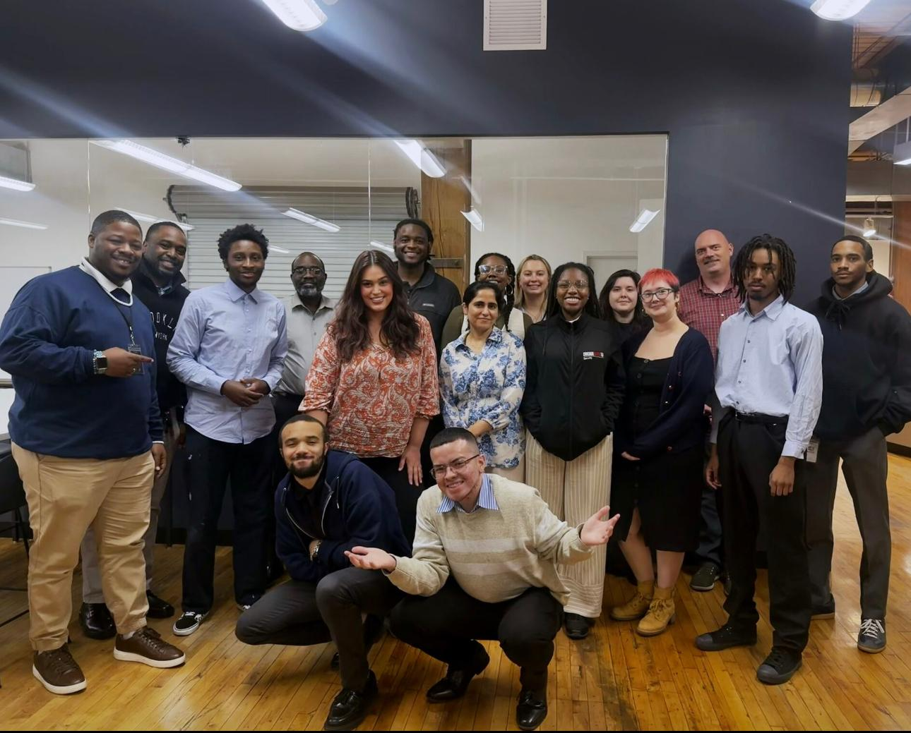

As a Project Manager during my i.c.stars internship, I helped coordinate responsibilities, track deadlines, organize tasks, and communicate with teammates. I learned that a successful project depends on everyone understanding what needs to be done and how their work contributes to the larger goal.
This experience helped me strengthen my organization, communication, and leadership skills. It also taught me that being a Project Manager means supporting your team, listening to different ideas, and following through on responsibilities.

My i.c.stars cohort — learning, collaborating, and growing together.